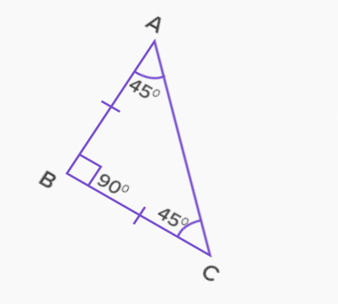

Para efeitos da nota atribuida à resolução de exercícios ao longo do semestre - Submeter até 23:59 de 18 de Dezembro
(o problema continuará depois disponível para submissão, mas sem contar para a nota)
[para perceber o contexto do problema deve ler o guião da aula #08]
Neste problema deverá submeter uma classe contendo um programa completo para resolver o problema (ou seja, com o método main).
 Para começar motivado neste teste, nada como desenhar alguns simples triângulos!
Na primeira linha do input vem um número N indicando o número de triângulos a desenhar (1 ≤ N ≤ 50).
Cada uma das N linhas seguintes contém um inteiro Ti (2 ≤ N ≤ 50) indicando o tamanho do triângulo a desenhar.
O output deve conter N triângulos, cada um desenhado com o tamanho pedido (e pela mesma ordem em que os tamanhos aparecem no input). Cada triângulo deve ser representado por um quadrado de Ti por Ti caracteres, onde o triângulo é representado por cardinais ('#') e deve estar encostado em cima à esquerda, sendo que os espaços são representados por pontos ('.'). Veja o exemplo de input para garantir que percebe o pedido.
| Input | Output | Explicação |
|---|---|---|
3 5 2 4 |
##### ####. ###.. ##... #.... ## #. #### ###. ##.. #... |
As primeiras 5 linhas são um triângulo de tamanho 5. As 2 linhas seguintes são um triângulo de tamanho 2. As 4 linhas seguintes são um triângulo de tamanho 4. |
Estruturas de Dados (CC1007)
DCC/FCUP - Faculdade de Ciências da Universidade do Porto